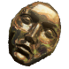
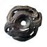
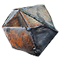

Vaal Orb: Corrupts an item, modifying it unpredictably.
Vaal Orb: Corrupts an item, modifying it unpredictably.

Divine Orb: Randomises the numeric values of the random modifiers on an item.

Jeweller's Orb: Reforges the number of sockets on an item.
 Orb of Fusing: Reforges the links between sockets on an item.
Orb of Fusing: Reforges the links between sockets on an item.

Armourer's Scrap: Improves the quality of an armour.
Hands of the High Templar
Quality: +20%
Armour: 387
Energy Shield: 76
Requires Level: 66, 51 Str, 51 Int
Can be modified while Corrupted
Can have up to 5 Implicit Modifiers while Item has this Modifier
162% increased Armour and Energy Shield
12% increased maximum life
+27% to Fire and Lightning Resistances
The laws of the faith do not apply to its leader.
Armour: 387
Energy Shield: 76
Requires Level: 66, 51 Str, 51 Int
Can be modified while Corrupted
Can have up to 5 Implicit Modifiers while Item has this Modifier
162% increased Armour and Energy Shield
12% increased maximum life
+27% to Fire and Lightning Resistances
The laws of the faith do not apply to its leader.